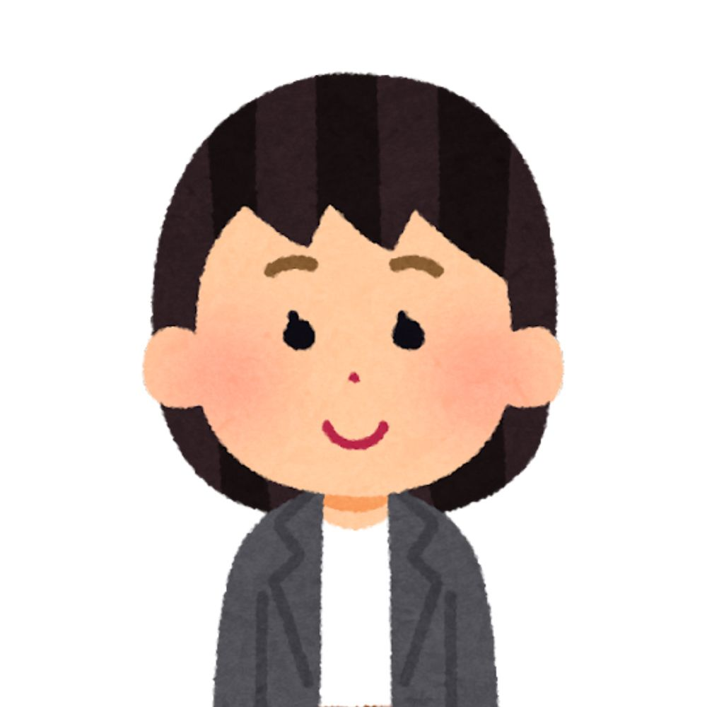

30代・女性（デスクワーク）
首・肩の重だるさ
夕方の首肩こりがつらかったのですが、心地よい電気と手技で軽くなりました。教わったストレッチで調子を保てています。
施術：TENS＋手技／セルフケア指導
EMS／ハイボルテージ／マイクロカレント等の物理療法と手技を組み合わせ 痛みの軽減と再発予防をめざす完全予約制
JR山手線・西武新宿線 高田馬場駅 （戸山口）徒歩10秒 東京メトロ東西線 徒歩2分 8:00–22:00で予約に対応
出力や周波数を個別に調整し 負担を抑えた施術を心がけます
投動作の癖や練習負荷も踏えた評価で再発予防まで支援
可動域と筋緊張のバランスを整え再発予防を後押しします。
競技復帰の可否や時期は医療機関と連携し判断します。
痛みの軽減だけでなく、再発予防までを見据えた評価・施術を重視しています。 電気療法 × 手技 を状態にあわせてハイブリッドに施し、快適域で個別に調整します。
「強い刺激＝良い」ではありません。からだが受け入れやすい刺激を積み重ね、できる動きを少しずつ増やすことを大切にしています。 不安やご希望（手技中心／電気中心など）は遠慮なくお伝えください。状態と安全性を踏まえ、最適な施術をご提案します。
※ 医師から物理療法の制限がある場合は事前にご申告ください。
9:00〜22:00 完全予約制
※個人の感想で、感じ方には個人差があります。
夕方の首肩こりがつらかったのですが、心地よい電気と手技で軽くなりました。教わったストレッチで調子を保てています。
施術：TENS＋手技／セルフケア指導
朝のこわばりが続いていましたが、ハイボルテージと骨盤まわりの手技で楽に。22時まで予約できて通いやすいです。
施術：ハイボルテージ＋手技／姿勢・動作アドバイス
微弱電流と手技で違和感が引き、段階的メニューで3週ほどで練習復帰。セルフケアも分かりやすかったです。
施術：マイクロカレント＋手技／復帰プログラム